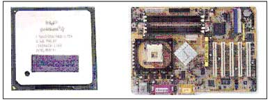

|
 |
 |
การประกอบเครื่องคอมพิวเตอร์การประกอบเครื่องคอมพิวเตอร์นั้นมีความสำคัญมากอีกอย่างหนึ่งในการใช้งานคอมพิวเตอร์ บางจุดในการประกอบอุปกรณ์ไม่สามารถเอาแน่นอนได้ เนื่องจากตัวอุปกรณ์และชิ้นส่วนของสินค้า แต่ละรุ่นที่ผลิตออกมา ดีไซน์การใช้งานมาต่างกันและพัฒนาขึ้นไปเรื่อย ๆ วิธีนี้การบางขั้นตอนอาจจะ ใช้ไม่ได้กับคอมพิวเตอร์บางรุ่น ลำดับขั้นตอนในการประกอบเครื่องคอมพิวเตอร์ 1. ประกอบซีพียูและแรมลงบนเมนบอร์ด 2. ติดตั้งเมนบอร์ดเข้ากับตัวเครื่อง 3. ต่อสายสัญญาณต่างๆ ภายในเครื่อง 4. ติดตั้งฟล็อปปี้ดิสก์ ฮาร์ดดิสก์ และไดร์ฟ ซีดีรอม 5. ติดตั้งการ์ดต่าง ๆ 6. ปิดเคส 7. ต่ออุปกรณ์ภายนอก 8 . ติดตั้งอุปกรณ์เพิ่มเติม
เครื่องมือที่ใช้ในการประกอบเครื่องคอมพิวเตอร์ - ไขควงปากแบน หรือไขควงแฉก - ตัวคีบสกรู ใช้คีบน็อตใส่ในช่องเกลียว สำหรับขันน็อตในที่แคบที่ไม่สามารถใช้มือจับได้ - ตัวถอดชิพ ใช้ถอดชิพใน CPU ที่เป็นเครื่องรุ่นเก่า ๆ - หลอดเก็บสกรูและจัมเปอร์ ใช้สำหรับเก็บสกรูและจัมเปอร์ที่เหลือจากการประกอบเครื่อง ใว้ใช้ในยามที่จำเป็น - ปากคีบ สำหรับคีบจับสกรูหรือจับอุปกรณ์ชิ้นเล็ก ๆ - บล็อคหกเหลี่ยมขนาดเล็ก ใช้สำหรับขันน็อตหกเหลี่ยมตัวเมียกับแผงเหล็กของเคส - หัวมะเฟือง สำหรับขันน็อตพิเศษแบบหกเหลี่ยมสำหรับอุปกรณ์บางประเภทที่ผู้ผลิต อุปกรณ์ไม่ต้องการให้มืออาชีพมาแกะซ่อมเอง 1. การประกอบ CPU และ RAM ลงเมนบอร์ด การติดตั้ง CPU 1. เปิดคู่มือของเมนบอร์ด หาตำแหน่งของ Socket สำหรับติดตั้ง CPU  2. เมื่อพบตำแหน่งแล้วยกก้าน Socket ออ
3. วาง CPU บน Socket สังเกตว่าหากตำแหน่งขาตรง จะสามารถวาง CPU ลงบนตำแหน่ง Socket โดยไม่เอียง และไม่ต้องออกแรงกดเลย
4. กดก้านล็อค CPU ลงเพื่อยึด CPU ให้แน่นอยู่กับที่
5. นำฮีทซิงค์ติดตั้งบนตัว CPU
6. วางขายึดฮีทซิงค์ลงบนเมนบอร์ด กดลงไปตรง ๆ จนขายึดล็อคเข้ากับกรอบ
7. โยกคันล็อคฮีทซิงค์ด้านบน 2 อันในทิศทางตรงกันข้ามจนสุด
8.เสียบสายพัดลมระบายความร้อนโดยหาตำแหน่งSocketบนเมนบอร์ดให้เมนบอร์ดจ่ายไฟให้พัดลมทำงาน
|


.jpg)
.jpg)